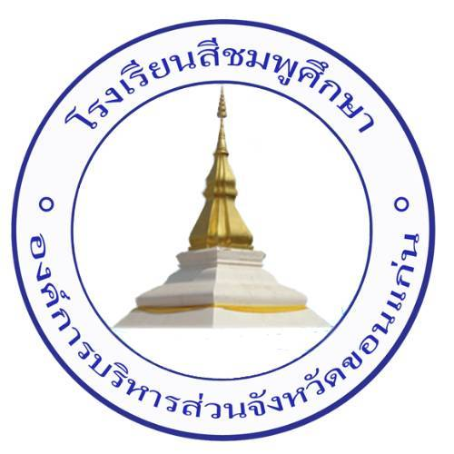

🙏ม.ต้น จัดกิจกรรมวันศุกร์ • ม.ปลาย จัดกิจกรรมวันอังคาร
| ลำดับ | เลขประจำตัว | ชื่อ - สกุล | ห้อง | สถานะการร่วมกิจกรรมในสัปดาห์นี้ |
|---|
(กพ.001)
ตำบลวังเพิ่ม อำเภอสีชมพู จังหวัดขอนแก่น
สังกัดองค์การบริหารส่วนจังหวัดขอนแก่น
ได้เสนอผลการเข้าร่วมกิจกรรมเพื่อโปรดพิจารณาอนุมัติดังนี้
การอนุมัติผลการประเมินกิจกรรมพัฒนาผู้เรียน (เกณฑ์ผ่าน ≥ 80%)
| จำนวนนักเรียน (คน) | ผ่าน (ผ) | ไม่ผ่าน (มผ) | หมายเหตุ |
|---|---|---|---|
| 0 | 0 | 0 | - |
หัวหน้ากิจกรรมส่งเสริมคุณธรรม จริยธรรม
ลงชื่อ............................................................
( นางจรรยา ครองยุทธ )
หัวหน้ากิจกรรมพัฒนาผู้เรียน
ลงชื่อ............................................................
( นายสิทธิศักดิ์ สิงห์โสภา )
เรียนเสนอเพื่อพิจารณา
ลงชื่อ............................................................
( นางสุภาวดี ภาระดี )
รองผู้อำนวยการกลุ่มบริหารงานวิชาการ
วันที่ ...... เดือน ..................... พ.ศ. ........
ลงชื่อ............................................................
( นางศุภลักษณ์ ดียิ่ง )
ผู้อำนวยการโรงเรียนสีชมพูศึกษา
วันที่ ...... เดือน ..................... พ.ศ. ........
ห้อง ม.1/1 • ภาคเรียนที่ 2 ปีการศึกษา 2569
| สัปดาห์ที่ | วัน/เดือน/ปี | กิจกรรมคุณธรรม จริยธรรม ที่จัดกิจกรรม | หมายเหตุ |
|---|
ห้อง ม.1/1 • สัญลักษณ์: มา (✓) สาย (ส) ลา (ล) ขาด (ข) กิจกรรม (ก)